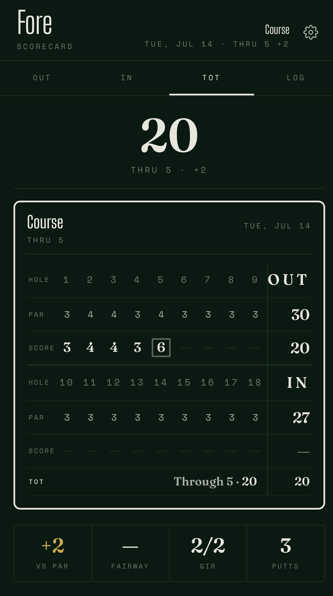

A minimal golf scorecard and round-tracking app for iPhone. For golfers who want a clean digital scorecard without the team-app bloat.

Fore is a small app for keeping score while you play. Set up a course, record strokes hole by hole, track putts and fairways if you want, see how you did. That's it. No GPS, no shot tracking, no handicap calculation, no social features.
It's the app for the part of golf that's most like keeping score on paper — the part those other apps make harder than it needs to be.
Horizontal nine-hole row. Tap a hole to score it. Score marks — circle for birdie, square for bogey — match the conventions on a paper scorecard.
Tap the strokes scoreboard to record par. Plus or minus to adjust. Putts, fairway, green in regulation if you want them — skip them if you don't.
Set par and distance per hole, with a slider. Yards or metres, your choice. Distance is optional. Edit any time mid-round if the card was wrong.
Total versus par, fairways hit, greens in regulation, putts. Finish all eighteen and you also get a scoring breakdown — birdies, pars, bogeys — plus your best and toughest hole.
Save finished rounds. Reopen them to edit. Delete what you don't want. The full scorecard preserved per round.
Rounds live in your browser, not on a server — so browser storage isn't a real backup. Export a spreadsheet you actually own, and import it back later or on another device. Fore reminds you when you're overdue.
Fore is a Progressive Web App — it runs in your iPhone's browser but you can install it to your home screen so it opens like a native app. Nothing to download from the App Store, and it works offline.
Fore will appear on your home screen as a regular app icon. Opens full-screen, works offline, remembers your rounds between sessions.
Some things this app does not do, on purpose:
That last one is the tradeoff worth understanding. Your rounds live in your browser, not on someone else's computer. Nobody can mine them, and nobody can lose them but you — so Fore nudges you to export a spreadsheet now and then, and that export is a real file you own.
It's built for the phone in your hand on the course. It works fine on a laptop, and the layout opens up there for reading old rounds, but scoring is designed for a thumb.
If you want GPS yardages and a course library, try 18Birdies or Arccos — they're built for that. Fore is for the part of golf those apps make harder than it needs to be: actually keeping score.
Free to use. Made by Dan at Backfield, a small studio.